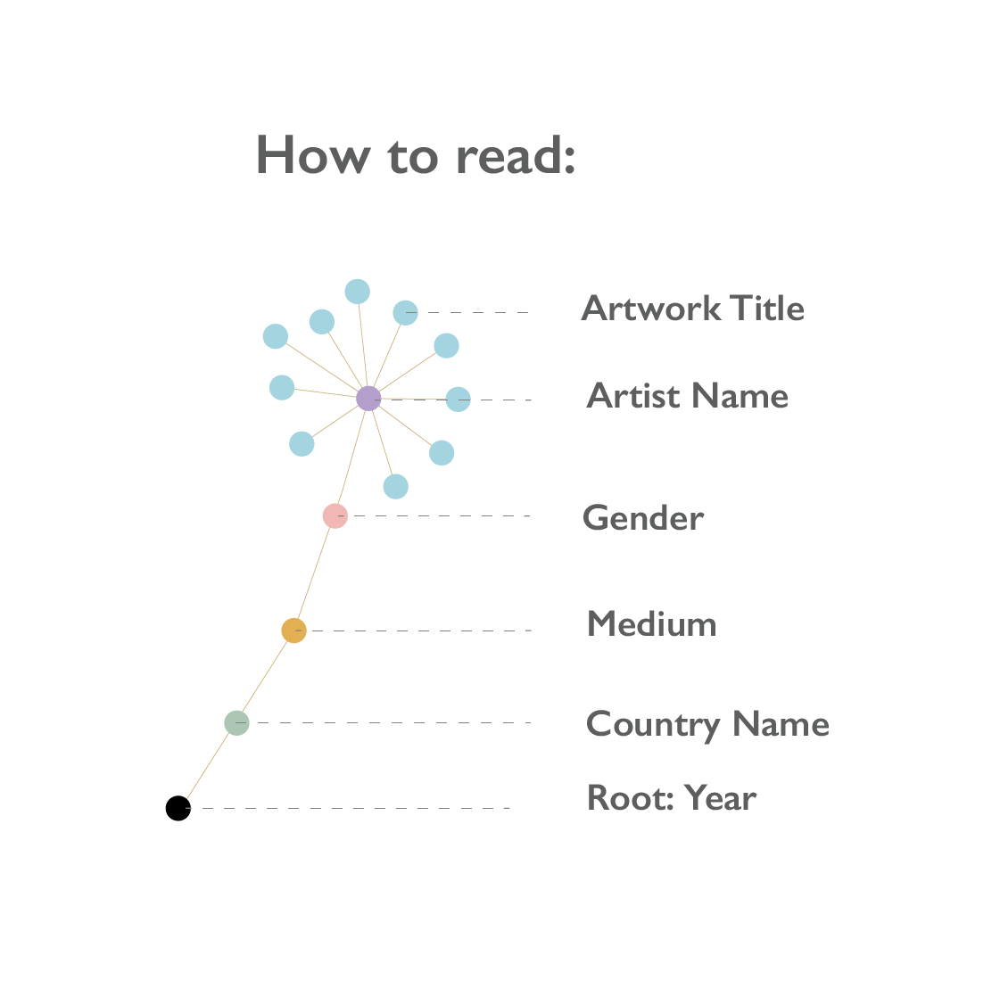

MoMA plays a major role in developing and collecting modernist art, and is often identified as one of the largest and most influential museums of modern art in the world. MoMA's collection offers an overview of modern and contemporary art, including works of architecture and design, drawing, painting, sculpture, photography, prints, illustrated books and artist's books, film, and electronic media.

MOMA evolving collection contains almost 200,000 works of modern and
contemporary art. Those artworks are from all over the world. In the ealry 90s, most of artworks are from Amerian, European countries. Gradually, MOMA's collections have expaned from western countries to Asian's, African countries. More and more artworks are from Japan, Korean, China and so on.